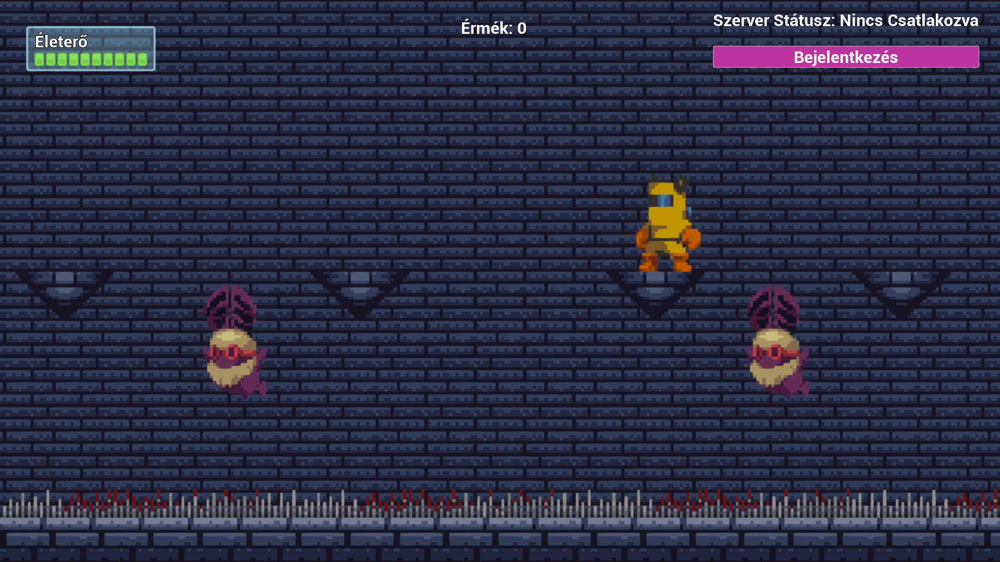
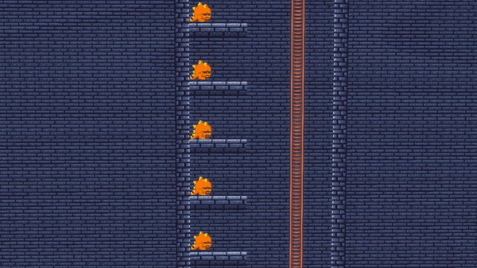
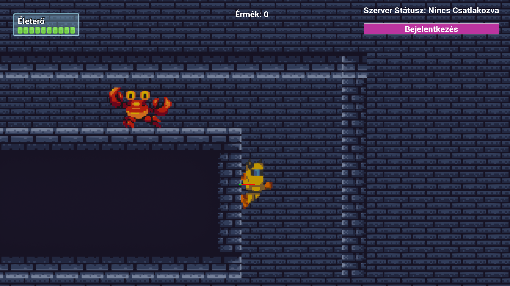

Információk

A játék fő célja, hogy a játékos karakterével kalandokon keresztül érméket gyűjts, ellenségekkel harcoljon, és minél magasabb pontszámot érjen el. Ellenségek.
Az összegyűjtött érmék egy adatbázishoz kapcsolódnak, ami lehetővé teszi, hogy a játékosok számláján tárolódjanak az érmék, így a játék újrajátszása esetén is megmarad az elért eredményük.
Ellenségek

A játék tele van különböző mesterséges intelligencia alapú ellenségekkel, amelyek mindegyike egyedi mozgás- és támadási mintával rendelkezik:
- Denevér: Csak függőlegesen tud mozogni (felfelé és lefelé), kiszámítható mintákban támad.
- Lizard: Távolról tüzel a játékosra, ami kihívást jelent, mivel a támadásait kerülni kell.
- Szem: Ez a lény követi a játékost, így folyton figyelni kell rá és taktikusan kell mozogni, hogy elkerülje a sebzést.
- Rák: Csak mozog, de érintésre sebzést okoz, így érdemes elkerülni vagy gyorsan likvidálni.
Funkciók

Főbb funkciók:
- Lövöldözés és Töltött Lövés: A játékos képes egyszerű lövésekkel támadni az ellenségeket, valamint rendelkezésre áll egy töltött lövés (charge shoot) lehetőség is, amely extra erőt biztosít, ha feltöltjük.
- Érmék és Adatbázis Kapcsolat: Az összegyűjtött érmék egy adatbázisban tárolódnak, így a játékosok fiókjukban bármikor megnézhetik eddigi eredményeiket és az elért jutalmakat.
- Main Menü és Megállítás Menü: A játék indulásakor egy átlátható főmenü fogad, ahol elérhető a játék indítása. A játék közben megállítható a játékmenet, így egy megállítás menüvel visszaléphetünk vagy újrakezdhetjük a játékot.
- Wall Slide: A játékos falak mentén le tud csúszni, ami stratégiai lehetőségeket kínál a játékmenethez.
- Becsúszás (Slide) és Létra Rendszer: A játékos képes csúszni a szinteken, hogy gyorsabban közlekedjen, vagy hogy átcsússzon alacsony tereptárgyak alatt. A létra rendszer lehetőséget biztosít a felfelé és lefelé történő közlekedéshez, így többdimenziós élményt nyújt.